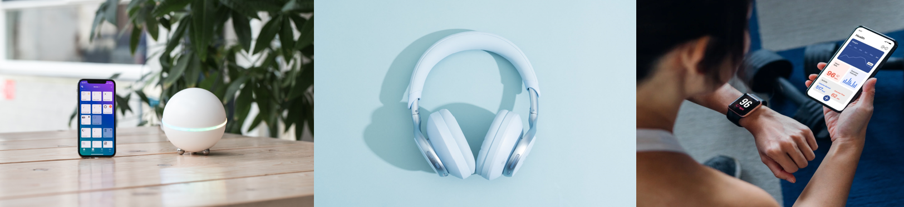

Exploring the Latest Trends in Tech: My Recent Purchases
Hello, fellow tech enthusiasts!
The ever-evolving world of technology never ceases to amaze me. Whether it's
cutting-edge gadgets or innovative software, there's always something new to explore
and enjoy. Today, I want to share my latest tech purchases that have brought excitement
and efficiency into my life. If you're on the lookout for the latest trends in technology,
read on to discover some must-have items that might pique your interest.
- Smart Home Hub
One of my most exciting recent purchases is a smart home hub. This device has transformed my living space into a fully integrated smart home. With the ability to control lights, thermostats, security cameras, and even my coffee maker through a single app or voice commands, the convenience is unmatched. The integration with various smart home ecosystems means I can customize my setup to fit my needs perfectly.
- Noise-Canceling Headphones
In the quest for perfect sound quality and uninterrupted focus, I invested in a pair of noise-canceling headphones. These headphones not only deliver crystal-clear audio but also effectively block out ambient noise. Whether I'm working in a bustling cafe or traveling, these headphones have become an essential part of my daily routine, providing a peaceful auditory experience wherever I go.
- Fitness Tracker
Staying on top of health and fitness goals has never been easier with a modern fitness tracker. My recent purchase tracks everything from steps and heart rate to sleep patterns and stress levels. The insights provided by this device have helped me make informed decisions about my health and wellness routine. Plus, the sleek design and customizable bands make it a stylish accessory.

Final Thoughts
Technology is an ever-evolving landscape, and staying updated with the latest trends can
significantly enhance our daily lives. These recent purchases have not only added convenience
and entertainment but also brought a touch of innovation into my routine. Whether you're looking
to upgrade your home setup, boost your productivity, or simply enjoy the latest gadgets, there's
something out there for everyone.
I hope my experiences with these tech purchases inspire you to explore new
possibilities and make informed decisions about your next tech investment.
Happy tech hunting!
 ABOUT ME
CONTACT
ABOUT ME
CONTACT